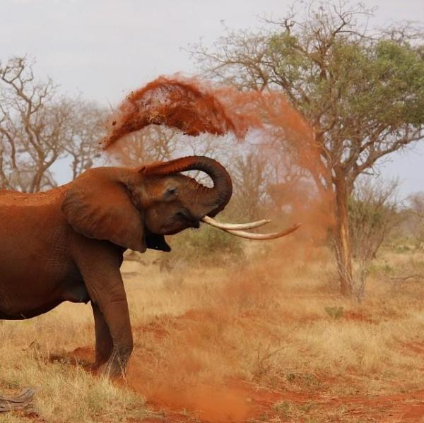
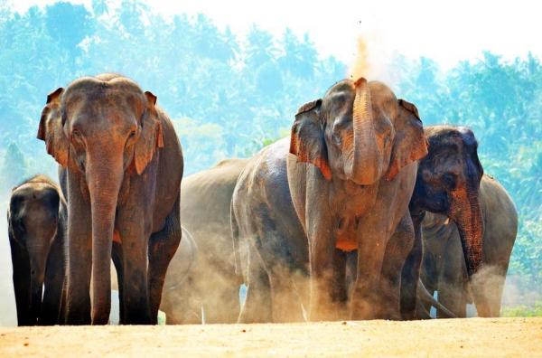

|  |
|
En Afrique, ils existent deux espèces d'éléphant: l'éléphant de savane, Loxodonta afridana, et l'éléphant de forêt d'Afrique, Loxodonta cyclotis.
L'éléphant de savane d'Afrique est de plus grande taille que celui de forêt. Certains mesurent jusqu'à 7 mètres de longueur et 4 mètres au garrot
et ils pèsent jusqu'à 7 tonnes !
Dans la nature l'éléphant vit au moins 50 ans, il meurt quand ses dernière dents tombent et qu'il ne peut plus mâcher ses aliments.
C'est pour cette raison que les éléphants en captivités peuvent vivre beaucoup plus de temps car ils reçoivent des soins de la part des soigneurs du zoo.
Ses ongles sont disposés de la manière suivante: 4 sur les pattes de devant et 3 sur celles de derrière. L'éléphant de savane d'Afrique est une espèce menacée.
Ses principaux prédateurs sont les chasseurs furtifs qui les chassent pour l'ivoire de leurs défenses ainsi que l'urbanisation de son environnement.
L'éléphant de la forêt d'Afrique est donc plus petit que celui de la savane. Normalement il n'excède pas les 2,5 mètres de hauteur au garrot.
Ses ongles sont disposés de la même manière que les éléphants asiatiques: 5 sur les pattes avant et 4 sur les pattes arrière.
Cette espèce d'éléphant habite les jungles et les forêts équatoriales dans lesquelles il se dissimule.
Ces éléphants possèdent de l'ivoire rosé qui les rend très convoité par les braconniers sans âme et sans scrupule.
Depuis des années le commerce de l'ivoire est interdit internationalement mais le marché noir subsiste au dépend d'animaux qui se trouvent dorénavant menacé d'extinction.
Ils existent 4 sous-espèces de l'éléphant d'Asie: l'éléphant du Sri Lanka, Elephas Maximus maximus; l'éléphant d'inde, Elephas maximus indicus; l'éléphant de Sumatra, Elephas maximus sumatrensis; l'éléphant de Bornéo, Elephas maximus borneensis.
Les différences morphologiques entre les éléphants asiatiques et les éléphants africains sont notables.
Les éléphants d'Asie sont en général plus petit: 4 à 5 mètres et 3,5 mètres de hauteur au garrot.
Leurs oreilles sont aussi plus petites et ils présentent sur le dos une petite bosse. Les défenses sont plus petites et cela n'est pas rare que des femelles n'en aient pas !
Nous continuons donc en nous intéressant de plus près aux caractéristiques physiques incroyable des éléphants.
Les oreilles des éléphants sont de grands organes très irrigués de manière vasculaire, leurs oreilles servent aux éléphants à réguler leur température de manière efficace.
Ainsi, les oreilles des éléphants les aident à dissiper leur chaleur corporelle, on est sûr que vous les avez déjà observé se ventilé avec leurs oreilles afin de s'aérer.
La trompe est cet autre organe si distinctif qu'ont les éléphants, elle leur sert pour de multiples raisons: pour se doucher, pour manger, pour arracher des arbres et des arbustes, pour se nettoyer les yeux, pour se mettre de la terre sur le dos pour se déparasiter.
La trompe des éléphants possède plus de 100 000 muscles différents ! Si ça, ce n'est pas incroyable ?
Les pattes des éléphants sont très particulières, elles ressemblent à des colonnes soutenant l'imposante masse du corps de l'éléphant. Les éléphants marchent à une vitesse qui va de 4 à 6 km/h mais si ils sont en train de fuir, ils peuvent courir à plus de 40 km/h.
Nous trouvons intéressant de vous exprimer le fait que bien que ce soit un animal à quatre pattes, son incroyable poids ne lui permet pas de sauter.
